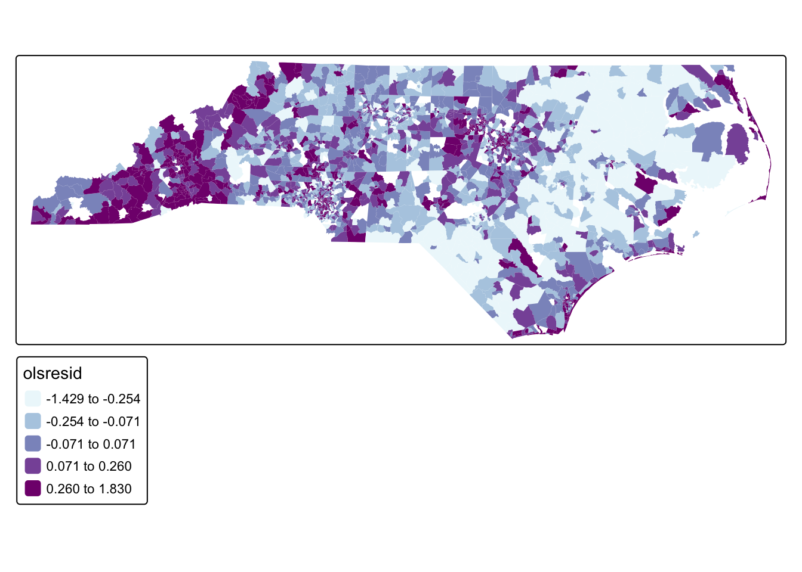
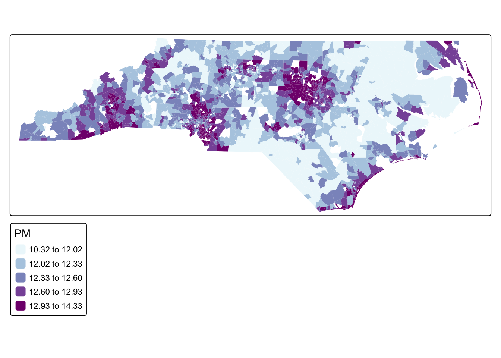
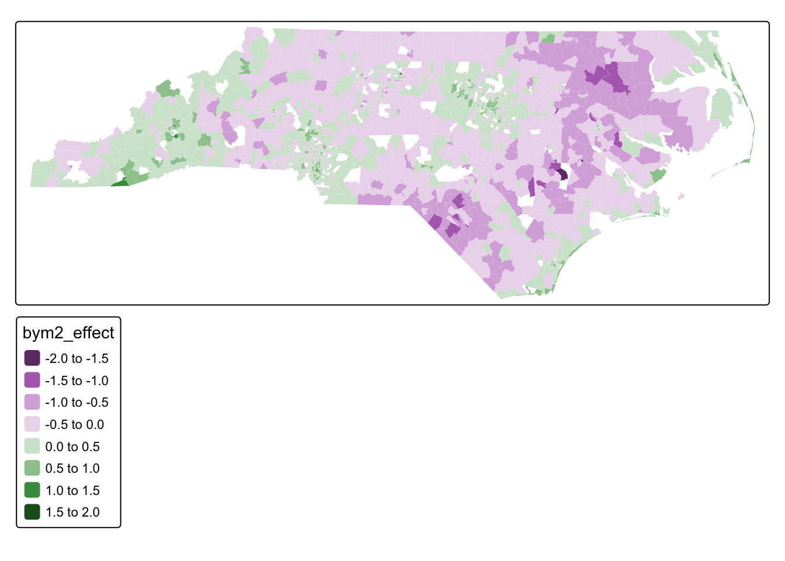

library(tidyverse)
library(tmap)
library(sf)
library(spatialreg)
library(spdep)
library(INLA)
#install INLA using this command: install.packages("INLA",repos = "https://inla.r-inla-download.org/R/stable", dep = TRUE)
#acs data for north carolina census tractws
acs_tract_nc <- st_read("https://drive.google.com/uc?export=download&id=1cnz4xgdDRZvlXzN3IyvCxOETRWfrpw-0") |> mutate(log_home_val = log(med_home_value))18 Bayesian Modeling
In this chapter, we will explore Bayesian modeling as an alternative to traditional spatial models. In frequentist spatial models like OLS with spatial lag (SLM) or spatial error models (SEM), spatial dependence is typically represented by a single parameter (e.g., ρ in SLM or λ in SEM). This parameter is applied uniformly across the study area, meaning the spatial effect is global and assumes a homogeneous influence of neighboring observations. The focus is on adjusting coefficient estimates to account for spatial autocorrelation, not explicitly modeling spatial heterogeneity.
In Bayesian spatial models, spatial dependence can be treated as a latent (unobserved) process that is estimated at the level of each spatial unit, which allows for local heterogeneity rather than assuming a uniform effect across the entire study area. Bayesian models produce posterior distributions for both the regression coefficients and the latent spatial effects.
We will use data from the 5-year estimates from the American Community Survey for North Carolina Census tracts.
To follow along with this tutorial, make a new .Rmd document. As you move through the tutorial add chunks, headers, and relevant text to your document.
18.1 Traditional Spatial Modeling
Suppose we are interested in modeling median home value (log normalized) as a response to several covariates:
- Accessibility (percent of people who walk to work)
- Median household income
- Median rent (for renter occupied units)
- Median year built of homes
We can start with running an OLS (assume all assumptions are met except for independence).
#ols
home_value_model <- lm(log_home_val ~ pct_walk_to_work + median_hh_inc + med_rent + med_year_structure_built, data = acs_tract_nc)
summary(home_value_model)
Call:
lm(formula = log_home_val ~ pct_walk_to_work + median_hh_inc +
med_rent + med_year_structure_built, data = acs_tract_nc)
Residuals:
Min 1Q Median 3Q Max
-1.42892 -0.19976 -0.00305 0.20347 1.83045
Coefficients:
Estimate Std. Error t value Pr(>|t|)
(Intercept) 7.251e+00 1.095e+00 6.625 4.25e-11 ***
pct_walk_to_work 1.111e-03 1.227e-04 9.056 < 2e-16 ***
median_hh_inc 9.308e-06 2.827e-07 32.921 < 2e-16 ***
med_rent 2.802e-04 2.086e-05 13.429 < 2e-16 ***
med_year_structure_built 2.086e-03 5.556e-04 3.754 0.000178 ***
---
Signif. codes: 0 '***' 0.001 '**' 0.01 '*' 0.05 '.' 0.1 ' ' 1
Residual standard error: 0.3391 on 2493 degrees of freedom
Multiple R-squared: 0.6048, Adjusted R-squared: 0.6042
F-statistic: 953.8 on 4 and 2493 DF, p-value: < 2.2e-16We could then check our residual Moran’s I
#add residuals as a variable
acs_tract_nc <-acs_tract_nc |> mutate(olsresid = resid(home_value_model))
#map residuals
tm_shape(acs_tract_nc) + tm_polygons(fill = "olsresid",fill.scale = tm_scale_intervals(values = "bu_pu", style = "quantile", n = 5), col_alpha = 0)
#calculate neighborhoods
nb <- poly2nb(acs_tract_nc, queen = TRUE)
#set neighborhood weight matrix
#zero policy allows 0 neighbors (subgraph)
nbw <- nb2listw(nb, style = "W", , zero.policy = TRUE)
#calculate Morans I
gmoran <- moran.test(acs_tract_nc$olsresid, nbw)
gmoran
Moran I test under randomisation
data: acs_tract_nc$olsresid
weights: nbw
n reduced by no-neighbour observations
Moran I statistic standard deviate = 36.169, p-value < 2.2e-16
alternative hypothesis: greater
sample estimates:
Moran I statistic Expectation Variance
0.4394378449 -0.0004011231 0.0001478792 Because home value is a classic lag effect, we might choose to just run a lag model
#lag model
fit.lag<-lagsarlm(log_home_val ~ pct_walk_to_work + median_hh_inc + med_rent + med_year_structure_built,
data = acs_tract_nc,
listw = nbw,
zero.policy = TRUE)
#see results
summary(fit.lag)
Call:lagsarlm(formula = log_home_val ~ pct_walk_to_work + median_hh_inc +
med_rent + med_year_structure_built, data = acs_tract_nc,
listw = nbw, zero.policy = TRUE)
Residuals:
Min 1Q Median 3Q Max
-1.287564 -0.181041 -0.005093 0.173196 2.814662
Type: lag
Regions with no neighbours included:
1321 1814 1986 2315
Coefficients: (asymptotic standard errors)
Estimate Std. Error z value Pr(>|z|)
(Intercept) 5.7312e+00 1.0234e+00 5.5999 2.144e-08
pct_walk_to_work 1.0116e-03 1.1459e-04 8.8278 < 2.2e-16
median_hh_inc 8.1798e-06 2.7014e-07 30.2795 < 2.2e-16
med_rent 2.0435e-04 1.9733e-05 10.3559 < 2.2e-16
med_year_structure_built 1.7200e-03 5.2061e-04 3.3038 0.0009538
Rho: 0.19497, LR test value: 318.55, p-value: < 2.22e-16
Asymptotic standard error: 0.011145
z-value: 17.494, p-value: < 2.22e-16
Wald statistic: 306.05, p-value: < 2.22e-16
Log likelihood: -681.1066 for lag model
ML residual variance (sigma squared): 0.1003, (sigma: 0.31671)
Number of observations: 2498
Number of parameters estimated: 7
AIC: 1376.2, (AIC for lm: 1692.8)
LM test for residual autocorrelation
test value: 720.89, p-value: < 2.22e-16In the spatial lag model, spatial dependence is represented by a single global parameter which means the strength of the spatial relationship between neighboring observations is assumed to be the same across the entire study area.
Q1. Using what you learned in the Regression tutorial, interpret the output of the OLS and SLM.
18.2 BYM Model
Bayesian modeling differs from the frequentist spatial models used earlier because it treats spatial dependence as part of the data-generating process rather than as a single adjustment parameter. In a Bayesian spatial model, the unexplained variation can instead be decomposed into tract-specific latent effects.
Another advantage of the Bayesian framework is that all unknown quantities in the model are treated as random variables with probability distributions. This includes the regression coefficients and the spatial random effects. Bayesian inference combines the information from the data with prior assumptions about these parameters to produce posterior distributions, which represent updated beliefs about the parameters after observing the data.
In this section, we introduce the Besag–York–Mollié (BYM) model, a Bayesian hierarchical model for areal spatial data.
Let \(Y_i\) be the logarithm of median home value in census tract \(i\), where \(i = 1, \ldots, n\). Because the outcome is continuous, we model it using a Gaussian probability distribution:
\[ Y_i \sim N(\mu_i, \sigma^2), \qquad i = 1, \ldots, n \]
This distribution describes the likelihood, meaning how the observed data are generated given the parameters of the model. The mean of the distribution is modeled as
\[ \mu_i = \beta_0 + \beta_1 \, pct\_walk\_to\_work_i + \beta_2 \, median\_hh\_inc_i + \beta_3 \, med\_rent_i + \beta_4 \, med\_year\_structure\_built_i + b_i \]
- \(\beta_0\) is the intercept
- \(\beta_1\) through \(\beta_4\) are the coefficients for the observed covariates
- \(b_i\) is the spatial random effect for tract \(i\)
The spatial random effect captures the portion of housing values that remains spatially patterned after accounting for the observed covariates. In the original BYM model, the spatial random effect is split into two components:
\[ b_i = u_i + v_i \]
These two terms represent two different sources of unexplained variation. The term \(u_i\) is the spatially structured effect. This captures the idea that nearby census tracts tend to be similar to one another. If one tract has a higher-than-expected home value after accounting for the covariates, neighboring tracts may also tend to have higher values. This structured effect is modeled using a Conditional Autoregressive (CAR) prior. The CAR prior defines the value of \(u_i\) relative to its neighboring tracts:
\[ u_i \mid u_{-i} \sim N\left( \frac{1}{n_i}\sum_{j \in \delta_i} u_j,\; \frac{\sigma_u^2}{n_i} \right) \]
- \(\delta_i\) is the set of neighboring tracts for tract \(i\)
- \(n_i\) is the number of neighbors
- the mean of \(u_i\) is the average spatial effect of neighboring tracts
Conceptually, this prior smooths values across space. Each tract’s spatial effect is encouraged to be similar to the average of its neighbors. The term \(v_i\) represents unstructured variation, meaning tract-level randomness that is not spatially patterned. This component captures variation that cannot be explained by either the covariates or the neighborhood structure. This effect is modeled using an independent and identically distributed (IID) prior:
\[ v_i \sim N(0, \sigma_v^2) \]
The IID prior assumes that each tract’s random noise is independent from the others and centered around zero. Together, these two components allow the model to separate spatial patterns from random local noise.
For this tutorial, we use the BYM2 version of the model. BYM2 is a reparameterization of the original BYM model that combines the structured and unstructured components into a single spatial effect:
\[ b_i = \frac{1}{\sqrt{\tau_b}} \left( \sqrt{1-\phi} \, v_i^* + \sqrt{\phi} \, u_i^* \right) \]
In this formulation:
- \(u_i^*\) is the scaled spatial (CAR) component
- \(v_i^*\) is the scaled IID component
- \(\tau_b\) controls the overall magnitude of the spatial variation
- \(\phi\) controls how much variation is spatially structured versus unstructured
When \(\phi\) is close to 1, most unexplained variation follows spatial neighborhood patterns. When \(\phi\) is close to 0, most unexplained variation behaves like independent noise across tracts. One advantage of BYM2 is that it uses Penalized Complexity (PC) priors, which are weakly informative priors designed to avoid overfitting. These priors encourage the model to prefer simpler explanations unless the data provide strong evidence of spatial structure.
To fit the model, we first create a neighborhood structure for the census tracts, similar to what we’ve done before, but creating it as a graph, not a neighborhood weight list.
nb_acs <- poly2nb(acs_tract_nc)
nb2INLA("map.adj", nb_acs)
g <- inla.read.graph(filename = "map.adj")Next, we create an index variable so that each census tract has its own spatial random effect:
acs_tract_nc$re_u <- 1:nrow(acs_tract_nc)We then specify the BYM2 model:
formula <- log_home_val ~ pct_walk_to_work + median_hh_inc + med_rent + med_year_structure_built +
f(re_u, model = "bym2", graph = g)This formula says that logged median home value is modeled as a function of the observed covariates plus a tract-level Bayesian spatial effect.
We fit the model using inla():
res <- inla(
formula,
family = "gaussian",
data = acs_tract_nc,
control.predictor = list(compute = TRUE),
control.compute = list(return.marginals.predictor = TRUE)
)We can look at the results for our fixed effects here:
res$summary.fixed mean sd 0.025quant 0.5quant
(Intercept) 5.098200e+00 9.599668e-01 3.215494e+00 5.098249e+00
pct_walk_to_work 4.763261e-04 9.812302e-05 2.838989e-04 4.763266e-04
median_hh_inc 7.403549e-06 2.425104e-07 6.927920e-06 7.403568e-06
med_rent 4.889016e-05 1.876975e-05 1.208460e-05 4.888902e-05
med_year_structure_built 3.390866e-03 4.859476e-04 2.437965e-03 3.390839e-03
0.975quant mode kld
(Intercept) 6.980621e+00 5.098250e+00 9.863344e-12
pct_walk_to_work 6.687506e-04 4.763266e-04 9.912646e-12
median_hh_inc 7.879066e-06 7.403568e-06 1.672782e-11
med_rent 8.570217e-05 4.888901e-05 1.042608e-11
med_year_structure_built 4.343920e-03 3.390839e-03 1.002671e-11Because this is a Bayesian model, the results are interpreted using posterior means and 95% credible intervals rather than p-values.
The intercept has a posterior mean of 5.10, with a 95% credible interval from 3.21 to 6.98. Since the response variable is the logarithm of median home value, this represents the expected log home value when all covariates equal zero, after accounting for the spatial random effect.
The coefficient for percent walking to work has a posterior mean of 0.000476, with a 95% credible interval from 0.000283 to 0.000669. Because the entire credible interval is positive, the model suggests that higher walk-to-work rates are associated with higher median home values, holding other variables constant.
The coefficient for median household income has a posterior mean of 7.40 × 10⁻⁶, with a 95% credible interval from 6.93 × 10⁻⁶ to 7.88 × 10⁻⁶. This interval is entirely positive, indicating a strong positive relationship between household income and home value.
The coefficient for median rent has a posterior mean of 4.88 × 10⁻⁵, with a 95% credible interval from 1.20 × 10⁻⁵ to 8.57 × 10⁻⁵. This suggests that tracts with higher rents also tend to have higher home values, which is consistent with overall housing market conditions.
The coefficient for median year structure built has a posterior mean of 0.00339, with a 95% credible interval from 0.00244 to 0.00435. This indicates that tracts with newer housing stock tend to have higher home values.
The fitted object contains posterior summaries for the model quantities. We first extract the posterior mean and 95% credible intervals for the fitted values:
acs_tract_nc$PM <- res$summary.fitted.values[, "mean"]
acs_tract_nc$LL <- res$summary.fitted.values[, "0.025quant"]
acs_tract_nc$UL <- res$summary.fitted.values[, "0.975quant"]For the BYM2 random effect, the first \(n\) rows of res$summary.random$re_u correspond to the tract-level spatial effect \(b_i\) that enters the model. We extract it as follows:
n <- nrow(acs_tract_nc)
acs_tract_nc$bym2_effect <- res$summary.random$re_u$mean[1:n]Finally, we can make the predictions. Remember, this is logged home value.
tm_shape(acs_tract_nc) +
tm_polygons("PM", fill.scale = tm_scale_intervals(values = "bu_pu", style = "quantile"), col_alpha = 0)
We can then map the posterior mean for the spatial random effect
tm_shape(acs_tract_nc) +
tm_polygons("bym2_effect", col_alpha = 0)
res$summary.hyperpar mean sd 0.025quant
Precision for the Gaussian observations 2.392013e+04 3.188375e+04 1481.4212980
Precision for re_u 8.419691e+00 3.675290e-01 7.7119976
Phi for re_u 7.181759e-01 2.475281e-02 0.6680895
0.5quant 0.975quant mode
Precision for the Gaussian observations 1.412002e+04 1.058577e+05 3938.988397
Precision for re_u 8.414186e+00 9.158747e+00 8.408631
Phi for re_u 7.186726e-01 7.654304e-01 0.719317This effect represents the portion of housing values that remains spatially patterned after accounting for the observed covariates in the model.
Because the response variable is the log of median home value, the spatial effect shifts the predicted value on the log scale.
- Positive values of \(b_i\) (green areas) indicate tracts where home values are higher than expected given the covariates.
- Negative values of \(b_i\) (purple areas) indicate tracts where home values are lower than expected given the covariates.
The model also estimates hyperparameters that describe the strength of the spatial structure. The parameter \(\phi\) controls how much of the remaining variation is spatially structured versus random noise. In this model, the posterior mean of \(\phi\) is approximately 0.72, meaning that about 72% of the remaining unexplained variation follows a spatial pattern, while the rest behaves like independent tract-level noise.
Overall, this map highlights localized spatial patterns in housing prices that remain after accounting for the socioeconomic and housing variables included in the model.